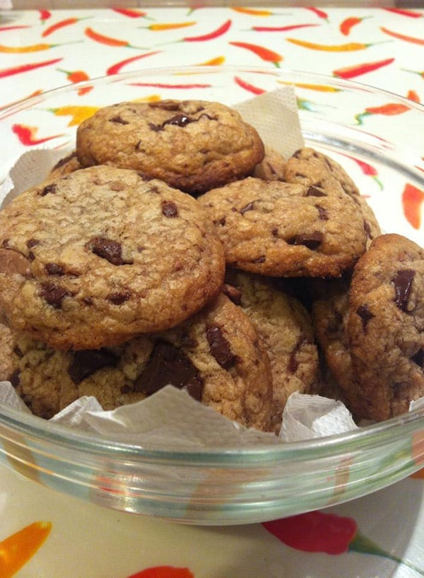

Chocolate Chip Cookies

Crunchy yet soft chocolate chip cookies, made with demerara sugar to add a delicious brown sugar taste.
Ingredients
- 1 egg
- 1 tsp vanilla essence
- 125g butter, melted then cooled (still liquid)
- 125g demerara sugar
- 125g granulated sugar
- 250g plain flour
- 1 tsp baking powder
- 200g dark chocolate, chopped into small pieces
method
- Sift the flour and baking powder into a mixing bowl and mix together.
- In a separate mixing bowl, beat the egg, then add the vanilla esence and butter and mix together.
- Add the demerara sugar to the egg mixture and mix well, then do the same with the granulated sugar.
- Alternately add small amounts of the flour and the chocolate chunks to the mixture, mixing well each time.
- Use a dessert spoon to take enough of the mixture to make small balls of cookie dough. Pace on a greaseproof paper-lined baking tray.
- Bake the dough balls in an oven preheated to 190C/fan 170C/gas mark 5 for 7-10 minutes. The cookies should look slightly underdone with only a hint of the golden brown crust when you remove them from the oven.
- Allow the cookies to cool on the baking tray for 10 minutes before moving them onto a wire rack to finish cooling
Homepage